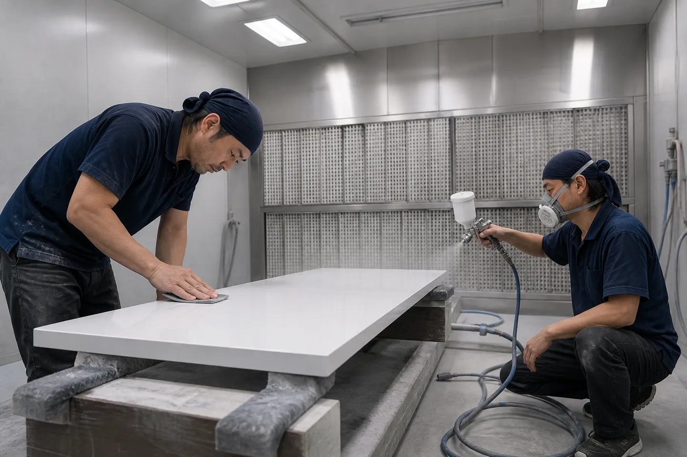

OUR ROLE
木工所のなかの、
塗装の専門部署
榑木工芸は1954年、江東区白河の小さな家具工房から始まりました。いまは住宅・店舗・オフィスの造作家具を設計図から製作しています。
塗装部は、その仕上げを受け持つ部署です。社内で組み上がった家具だけでなく、設計事務所や工務店、ほかの木工所から預かった部材の塗装も請け負っています。
木地を見て、使われる場所を聞いて、塗料と艶を決める。決めたとおりの面を、何十枚でも同じ表情でそろえる。地味な仕事ですが、空間の仕上がりはここに表れます。
PHILOSOPHY
私たちが大切にしている考え方
01
木を隠さない
厚い膜で覆えば傷には強くなりますが、木目や手ざわりは遠のきます。用途に必要な強さを確かめたうえで、膜はできるだけ薄く重ねます。
02
一枚目と百枚目をそろえる
扉や天板は、並んだときに色と艶の差が目立ちます。最初に作った色見本を基準板として残し、ロットの途中でも見比べながら塗ります。
03
現場で決まったことを、塗装で崩さない
照明の色や床材との取り合いで、同じ塗装でも見え方は変わります。可能なかぎり現場の条件を聞き、必要なら照明を合わせて見本を確認します。
見えない工程に時間をかける
仕上がりの良し悪しは、塗る前の研磨でほぼ決まります。番手を一段ずつ上げ、斜めから光を当てて、指先でも傷を探します。塗装部の作業時間のうち、半分近くは塗らない時間です。
手間を惜しまないのは、塗り直しのほうがはるかに時間も材料もかかるからです。結果として納期を守ることにもつながっています。
DEVELOPMENT
人材育成
塗装の勘は、教科書だけでは身につきません。塗装部では、先輩の隣で同じ面を見ながら覚えていくやり方を続けています。
そのうえで、身につける順番は決めています。焦らず、ひとつずつ任せる範囲を広げていきます。
1年目
研磨と下地づくり
サンダーと手研ぎで、塗装前の面をつくる。番手の選び方と、傷の見つけ方を覚える時期です。
2〜3年目
吹付と乾燥の管理
スプレーガンの距離と速さ、季節ごとの乾燥時間を体で覚える。小物から始めて、天板へ進みます。
4〜6年目
色合わせと艶の調整
色見本を自分で作り、お客さまと確認するところまでを担当します。
7年目〜
工程の段取りと指導
案件全体の塗装計画を組み、後輩の面を見る立場になります。
社外の講習や展示会への参加費は会社が負担しています。月に一度、全員で互いの仕上げ板を見せ合う勉強会も開いています。
CONTACT
面のことなら、まず相談を。
図面の段階からご一緒できます。